사이즈는 XS, 성능은 XL
로봇카페의 컴팩트한 변신.
사용자 인터렉티브 UX
인공지능 슈퍼바이저
1잔 35초의 속도
12개의 픽업 존
최상위 기술을
콤팩트하게 담아냈다.
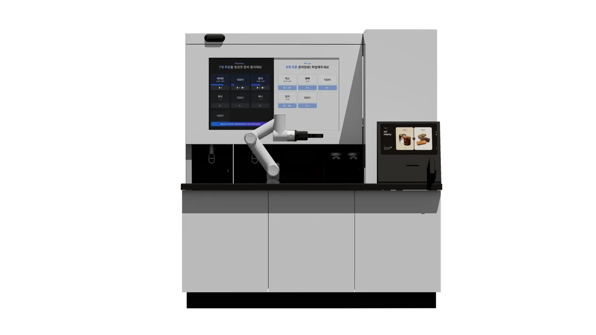
핵심만 봐도 다르다.
1잔 42초, 기록적인 속도.
제조 시간도 최단 수준으로.
병렬 제조 알고리즘을 적용해 음료를 동시 제조할 수 있습니다.
병렬 제조 알고리즘
바리스브루 X는 2개 주문을 동시에 소화합니다. 아메리카노 1잔 42초라는 업계 선도적인 속도를 자랑하죠.
최고 속도를 24시간 동안
바리스브루 X의 서비스는 24시간, 365일 쉴 새 없이 이어집니다. 로봇 기술로 사람 수준의 서비스를 제공하는 것은 자판기형 무인 카페와 확연히 차이납니다.
1평의 재발견.
컴팩트한 사이즈와 미니멀한 제품 설계를 통해
어떤 작은 공간에도 로봇의 혁신적 가치를 부여합니다.
Extra Small 사이즈
1500 x 1800. 빈틈없는 설계로 최상위 핵심 기술을 이 미니멀한 사이즈 안에 모두 담았습니다.
원하는대로 Bespoke 디자인
모듈형으로 설계된 바리스브루X는 원하는 색상과 재질로 외관을 바꿀 수 있어 공간의 분위기도 변신시킵니다.
업계 유일의 오픈형 구조
고객과 로봇 사이 벽이 없는 오픈형 구조는 바리스브루X의 안전성을 증명합니다.
로봇, 무인과는 다르다.
때로는 사람처럼, 때로는 진짜 로봇답게.
바리스브루X의 UX는 기존의 유인, 무인매장이 대체하지 못하는 독보적인 경험을 제공합니다.

자체 개발 로봇 앱/키오스크.
직관적인 UI/UX를 개발해 적용한 로봇 인터렉티브 키오스크와 개인화 앱이 쉽고 빠른 주문 여정을 완성합니다.
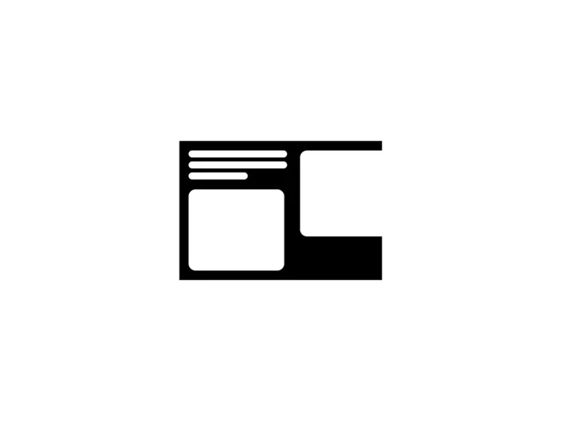
언어장벽 없이 다국어 지원.
로봇 키오스크는 한국어, 영어, 일본어, 중국어 등 다국어를 지원하고 지속 확대 중으로, 언어장벽 없이 넓은 고객층을 수용합니다.
기약 없는 기다림은 그만.
로봇 전면의 풀 사이즈 디스플레이가 제조 현황과 추천 메뉴 등 다채로운 정보를 전달합니다.
반듯함 속 삐져나오는 위트.
픽업하자마자 디지털 픽업구에 나타나는 위트 있는 팝업 멘트는 마이크로 단위의 섬세한 UX를 보여줍니다.
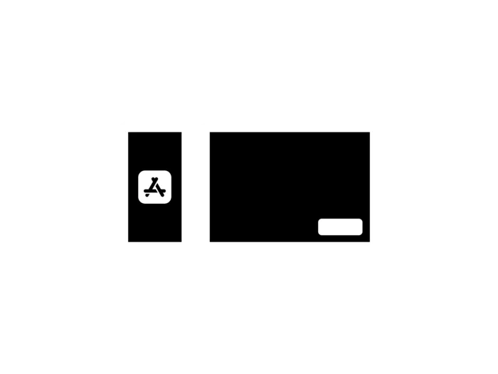
마무리 인사까지 착실하게.
손인사, 대기 중 숨쉬기, 이벤트를 위한 춤추기까지. 다양한 로봇 모션은 각도와 초속까지 고객이 편안히 받아들일 수 있도록 설계되어 있습니다.
AI 슈퍼바이저의 서비스 관리.
무려 12개의 픽업존까지.
인공지능의 눈이라 할 수 있는 ‘비전 X’ 카메라가 똑똑하게 서비스를 관리합니다.
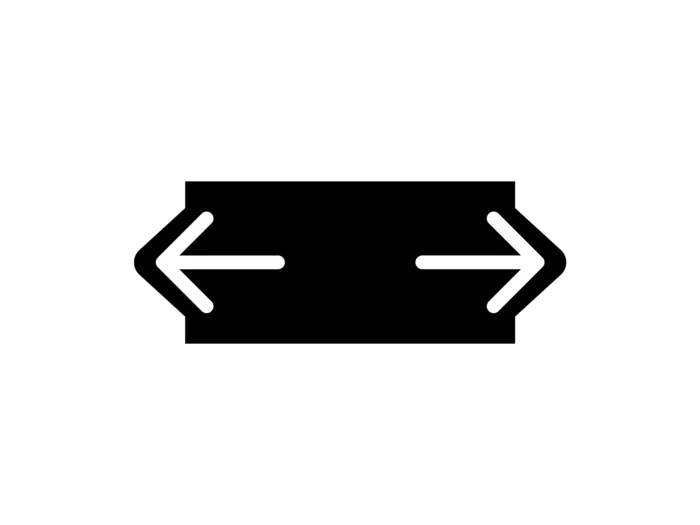
12개 와이드한 픽업대
바리스브루를 잇는 업계 최대 규모 픽업대. 바리스브루X는 12개 메뉴까지 서빙해 픽업 지연으로 인한 대기 시간을 최소화합니다.
인공지능이 관리하는 픽업 서비스
내장된 AI 카메라 ‘비전X’가 픽업대를 실시간으로 관찰해 충돌을 방지하고, 효율적인 서빙 동선을 만듭니다.
주문메뉴 묶음 안내
여러 메뉴를 픽업할 때 한 눈에 확인 가능한 묶음 안내 UI는 유인 매장에서도 구현하기 어려운 바리스브루X만의 편의 기능입니다.
멀티채널 픽업 알람
메뉴 완성 즉시 음성으로 안내할 뿐 아니라, 디지털 픽업대에 주문자 정보를 노출하여 고객이 많을 때도 픽업 혼선을 줄입니다.
맛은 Extra Delicious.
두 가지 원두 옵션을 갖춘 바리스브루 X는
전문가들의 손을 거친 최상급 원두로 다채로운 메뉴를 제공합니다.
바리스타 챔피언의 메뉴
국가대표 출신의 강민서 바리스타와 협업하여 소비자를 유인하는 시그니처 메뉴를 개발합니다.
17년 커피 마스터의 노하우 전수
바리스타, 로스터, 커피 사업가로 경력을 이어온 김동진 대표가 개발에 참여해 로봇이 커피 제조에 최적화되었습니다.
업계 최초이자 유일의 로스터리
김동진 대표가 관리하는 로스터리에서 최상급 원두를 로스팅합니다. 그리고 원두의 풍미 발현에 최적화된 레시피를 로봇에게 전수합니다.
장비도 헤비급
업계 최상급의 커피 장비를 로봇 네트워크와 연동하여 탬핑압, 온도, 추출방식까지 제어하는 품질 유지 알고리즘을 적용했습니다.
필요에 핏한
맞춤 옵션.


로봇을 얻는다는 것.
자유를 얻는다는 것.

서비스 01
XYZ 클라우드 대시보드
- 웹과 모바일 호환되는 대시보드를 통해 24시간 원거리 매장 점검 가능
- 재고 현황, 점포 상태, 이상 상황 등 다양한 매장 정보 안내 (Kakao 알림 지원)

서비스 02
기기 관리 및 유지보수
- 로봇 및 커피머신 등 제공 집기의 정기 점검 서비스
- 사용자 유지보수 교육 (최초 1회)
- 시스템 정기 유지 보수 : SW 업데이트, 소모품 교체 (관련 설비 · 자재 비용별도)
- 시스템 원격 지원 : 기술적 오류 대응
<무상 A/S 제외>
- 로봇암, 레일, 커피기기의 일부 항목은 제조사 A/S 정책에 따름 (부품별 가격 별도 안내)
- 고객 과실에 의한 서비스 요청 및 당사 권장 원자재 외 제품 사용에 의한 오류

서비스 03
엑스바이저 운영 (옵션)
- 최상의 F&B 서비스를 위한 전문인력의 운영 대행 서비스
- C/S 대응 (원격, 현장 지원), 기기 최적화 및 재고 관리, 커피 머신 등 기기 위생 관리 등 지원
※ 해당 옵션은 유료 상품으로, 상담을 통해 자세히 안내 받으실 수 있습니다.
가격 조건


가격 조건
| 방식 | 로봇 / 기기 | 설치공사비 (별도) | |
|---|---|---|---|
| 초기납부 | 월납부액 | ||
| 구매 | 6,000만원 | 월 252만 원 (24개월납) | 1,000만원 |
| 렌탈 | 4,000만원 | 월 168만원 (60개월납) | |
| 방식 | 로봇 / 기기 | 설치공사비 (별도) | |
|---|---|---|---|
| 초기납부 | 월납부액 | ||
| 구매 | 3,000만원 | 월 201만 원 (24개월납) | 500만원 |
| 렌탈 | 2,000만원 | 월 119만원 (60개월납) | |
※12개월 무이자 할부 가능
※서비스 이용료 및 맞춤 옵션 등 상담을 통해 상세히 안내 받으실 수 있습니다.
※ 일시불, 카드할부, 렌탈, 리스 등 상세 조건은 별도 가격표 송부
로봇 사양
| 항목 | 제품 / 사양 | |
|---|---|---|
| 로봇 | 구분 | FR (Arm), 엔비디아 (Platform) |
| 외관 | 제품 크기 | W3420 X D2320 X H1960 (mm) |
| 성능 | 픽업 가능 수량 | 24ch |
| 운영시간 | 24시간 운영 가능 (일정시간 유인 관리 필요) | |
| 메뉴 | 음료 30종+ / 푸드 3종 (메뉴 변동 가능) | |
| 제조 | 아메리카노 1잔 40초 (병렬주문시) | |
| 1회 관리 | 1회 충전시 - 컵 : 360개 (최대) / 리드 : 180개 | |
| 편의 기능 | 관리 APP | 다수 매장 동시 운영 / 운영 모드 선택 / 매출 조회 / 재고관리 / 기기 제어 (재실행) / 이상 상황 이벤트 알림 / 온습도 모니터링 |
| DID | 운영자 커스텀 화면, 정보 및 소식 화면 제공 | |
| 사운드 | 음성 안내, BGM 재생 | |
| 설비 | 전압 | 15kw 이상 (3상 4선 / 50A 권장) |
| 기기 급수 | 직수 필요 (관경 25A / SUS 강관) | |
| 기기 배수 | 배수 필요 (관경 50A / PVC – VG1) | |
| 인터넷 | 유선 및 고정 IP 필요 (설치시 기술진 협의 필요) |